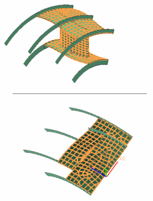
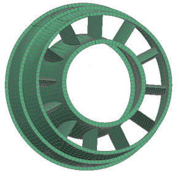

Copy the strut elements
Copy the remaining elements in the strut.
 Element Copy and Translate (Element Operations toolbar)
Element Copy and Translate (Element Operations toolbar)
-
Method (Selection bar)
Related Elements

-
Type Filter (Selection bar)
Polygon Face
-
 Select the faces of the strut model, excluding the ribs. Be sure to include the airfoil-shaped face on the bottom of the model.
Select the faces of the strut model, excluding the ribs. Be sure to include the airfoil-shaped face on the bottom of the model.

-
Direction
-
 CSYS of Object (Specify CSYS)
CSYS of Object (Specify CSYS)
-


-
OK
-

The model represents a turbine exhaust strut. For an actual analysis, you would continue to copy the elements around in a circle. In this activity, for simplicity, you are only modeling two segments.

For the full version of this activity, see the NX Advanced Simulation self-paced training (CAST or Learning Advantage).